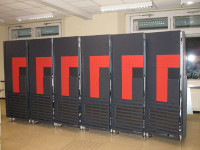

The Cray T3E is the successor of our Cray T3D and is a massively parallel supercomputer, launched in 1995. In contrast to our Cray T3D, we own a Cray T3E in a multi-cabinet air-cooled configuration with up to 128 processing elements. Therefore it's a perfect supercomputer to run and operate frequently without too complex infrastructure requirements, except the high power consumption.
Since we have a bunch of cabinets we can even run two Cray T3E installations! A small configuration with an acceptable power footprint for regular operation, and a maximum configuration with 128 processors and 16 GBytes of main memory, of course.
The development of massively parallel supercomputers started very early at Cray. Together with DEC they launched a project called Piranha and the first results where named Wildfire and Marvel. That's why we named our two supercomputers wildfire and marvel, too.
If you're interessted in more details about the Cray T3E have a look at Wikipedia.
This supercomputer should be used as a primary development system for massively parallel workloads. It consists of two cabinets with 32 processing elements total. If your code is working fine you can request a schedule for the larger 128 PEs configuration.
This supercomputer is the largest possible configuration of an air-cooled Cray T3E. It consists of 6 cabinets and 128 processing elements total, with a peak performance of 80.0 GigaFLOPS.
